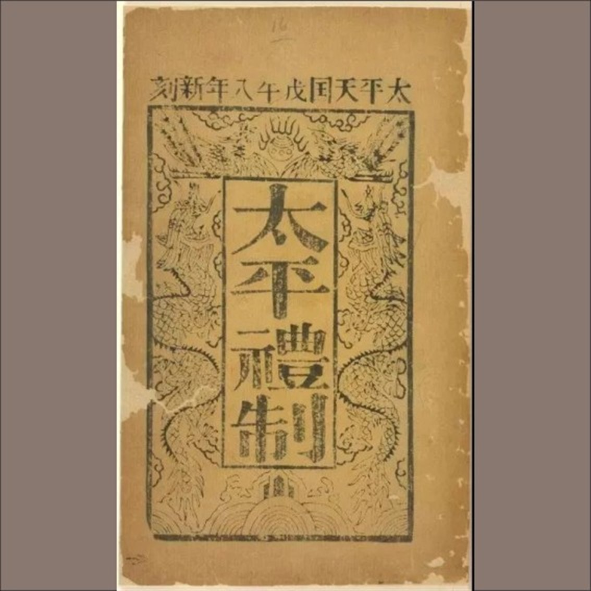

中国近代史 · 封建帝王
洪秀全
反抗者，如何成为天王
他用一套宗教语言，把农民的不满组织成一支能建政权的力量；然后，他把玉玺、宫殿、等级、封王和独断，一件一件地搬回了自己的宫里——一个反抗者，就这样完成了向封建帝王的转身。
1814—1864 · 广东花县
太平天国 · 1851—1864
从农民起义领袖到封建帝王
各位老师、同学好。今天我要讲的这个人，站在两个完全相反的评价中间：他是中国近代规模最大的农民战争的发动者——十四年，席卷大半个中国；他也是同一场战争里，把自己关进深宫、把平等改写成等级的那个人。
所以我不打算只把他当英雄，也不打算只把他当疯子。我想回答一个问题：**为什么一个反压迫起兵的人，最后把自己做成了皇帝？**
这一页是整份报告的起点：一个反抗者，如何完成向封建帝王的转身。
证据一 · 天王玉玺
神权的外衣，
专制的内核
天京陷落时缴获的天王玉玺，刻有“天父上帝、永定乾坤”等文字，把洪秀全家族与上帝、耶稣并列在同一套神圣谱系里。
玺文里的天国
天父上帝 · 永定乾坤
神圣、永恒、统一
现实里的天国
内讧 · 割据 · 城破
四分五裂，摇摇欲坠
天王玉玺 — 神权外衣下的专制王权。宏大玺文与四分五裂的现实，构成最直接的反差：他靠宗教起事，最后也只能靠宗教神话来维系权力。
玉玺 · 左右拖动可旋转查看（玺面 / 天父上帝 / 永定乾坤 / 天王真主）
接下来是我这组报告的重点：证据。第一件是天王玉玺。
天京陷落时缴获的这方玉玺，刻着“天父上帝、永定乾坤”这样的文字，**把洪秀全的家族和上帝、耶稣并列在一起**。请注意这个反差：玺文里的天国是永恒的、统一的；而现实里的天国，正在内讧和割据中裂开。
他借宗教起事，后期也只能依靠宗教神话维持个人权力。神权是外衣，王权才是内核——这就是这一页要说的矛盾。
证据二 · 天王府“太平一统”
理想平等，
帝王奢靡
史料记载，洪秀全征数万民夫修建天王府，定都之后长年深居宫中。起义宣扬人人平等，定都后却大兴土木，复刻封建帝王的那一套奢华。
天王府“太平一统” — 理想平等与帝王奢靡的撕裂。一个把“平等”写在旗子上的政权，最先修好的，是王的宫殿。
第二件证据，是天王府的大殿，匾上写着“太平一统”。
史料记载，洪秀全征发数万民夫修建天王府，定都之后长期深居宫中。而与此同时，前线的将士在围城和饥困里苦战。**一个把“平等”写在旗子上的政权，最先修好的，是王的宫殿。**
请注意这页中间的这道裂缝——它不是特效噱头，它就是这个政权内部的真实关系：前面是理想，后面是奢华。高层腐化，动摇的是天国的根基。

《太平礼制》· 古籍书影
《太平礼制》是天国的等级典章。天京事变之后，它被反复修改，王爵持续贬值——爵位越封越多，权力却越来越散。
0
余人
后期所封王爵
据黄文英供词
《太平礼制》— 制度沦为制衡将领的工具。“两千七百余人”出自黄文英供词，是史料给出的一种统计口径；但这个大方向是清楚的。
第三件证据，是《太平礼制》。它是天国的等级典章，天京事变之后被反复修改，王爵持续贬值。据黄文英供词，后期所封王爵多达两千七百余人。
为什么要封这么多？因为猜忌。洪秀全想用封王来分化大将的兵权，结果诸王互不统属，军政体系彻底混乱。**他想用制度解决问题，结果制度本身变成了问题。**
这里也要说明：两千七百余人出自黄文英供词，是史料给出的一种统计口径。但“制度沦为制衡将领的工具”这个大方向，是清楚的。
封王太多。李秀成被俘后所写自述，把“封王太多”列为天朝重大失误之一。
作为核心将领，他亲眼见证滥封王爵造成将领各自为战。洪秀全想用封王稳固统治，却因猜忌与私心，加剧分裂，加速了政权的崩溃。
《李秀成自述》— 亲历者眼中滥封王爵的致命失误。史料边界：自述写于被俘之后，可能含自我辩解成分；但在“后期权力分散”这一点上，它与其他材料大体一致。
第四件证据，是《李秀成自述》。李秀成被俘之后写下自述，把“封王太多”列为天朝的重大失误之一。
他作为核心将领，亲眼看到滥封王爵让将领们各自为战。**洪秀全想用封王稳住统治，结果因为猜忌和私心，加速了分裂。**
这份材料要用得有分寸：它写于被俘之后，难免有自我辩解的成分；但在“后期权力分散”这一点上，它和其他材料大体一致。这也是我们讲史料时该有的态度——不迷信任何一份单一材料。
只有臣错 无主错
《天父诗》是洪秀全在深宫写下的训诫条文，其中就有“只有臣错无主错”这样的话。他起兵时反对的是压迫；掌权后建立的，却是一套“臣下永远错、君主永远对”的秩序。
《天父诗》— 独断封闭的君主思想。他反对的是别人做皇帝，不是皇帝这个位置。
备用的一页是《天父诗》。这是洪秀全在深宫里写下的训诫条文，其中有“只有臣错无主错”这样的话。
请体会这句话的重量：他起兵的时候，反对的是压迫；掌权以后，他建立的是一套**“臣下永远错、君主永远对”**的秩序。
一句话总结这一页：他反对的是别人做皇帝，不是皇帝这个位置。
对照 · 反抗者与帝王
他喊出的，他做成的
三组对照，正面与背面——卡片会自动翻面，也可以把鼠标放上去手动翻。
他喊出的天下多男子，尽是兄弟之辈
他做成的天王之下，等级森严：后期封王两千余人
他喊出的有田同耕，有饭同食，有衣同穿
他做成的《天朝田亩制度》几乎没有真正落地
他喊出的天下多女子，尽是姊妹之群
他做成的《天父诗》里，是管束后妃的“十该打”
他把平等写在旗子上，把等级写进制度里。
把前面几页放在一起，就出现了这份报告真正想说的问题。
**他喊出的，是“天下多男子，尽是兄弟之辈”；他做成的，是天王之下等级森严。**他喊出的，是“有田同耕，有饭同食”；他做成的，是《天朝田亩制度》几乎没能落地。他喊出的，是“天下多女子，尽是姊妹之群”；他做成的，是《天父诗》里管束后妃的条规。
一句话：他把平等写在旗子上，把等级写进制度里。这不是后人强加给他的评价，而是他自己的文本摆在一起之后的结论。
结论 · 封建帝王
他推翻了旧王朝，
坐上了同一把椅子
- 01
他确实动摇了旧秩序。十四年，席卷大半个中国，让反清从地方叛乱变成一个全国性问题。
- 02
他没能建立新秩序。政权内部很快长出了自己的特权；理想越完整，越容易和现实脱节。
- 03
所以他的意义不在于建成了什么，而在于暴露了什么。旧王朝的脆弱、农民起义的天花板，以及“破”与“立”之间那段最难的距离。
知有民族而不知有民权，知有君主而不知有民主。孙中山评洪秀全
材料边界：评价洪秀全，不能只信太平天国的宣传，也不能只信曾国藩一方的说法。把他自己的文本、同时代人的记录和后人的研究放在一起看，才是讲历史应有的分寸。
所以我的判断是：洪秀全是一个有强烈宗教感、有政治想象、也有动员天才的人，但他**没有完成从“破”到“立”的转变**。
他确实动摇了旧秩序——十四年，让反清从地方叛乱变成一个全国性问题；他没能建起新秩序——政权内部很快长出了自己的特权。孙中山后来有一句很清醒的评价：“知有民族而不知有民权，知有君主而不知有民主。”
最后说一句关于材料的话：评价他，不能只信太平天国的宣传，也不能只信曾国藩一方的说法。谢谢大家。